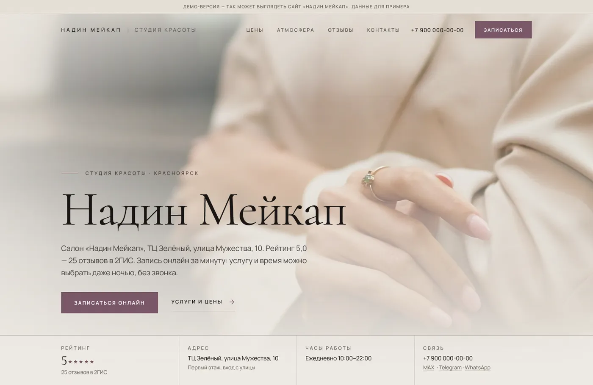
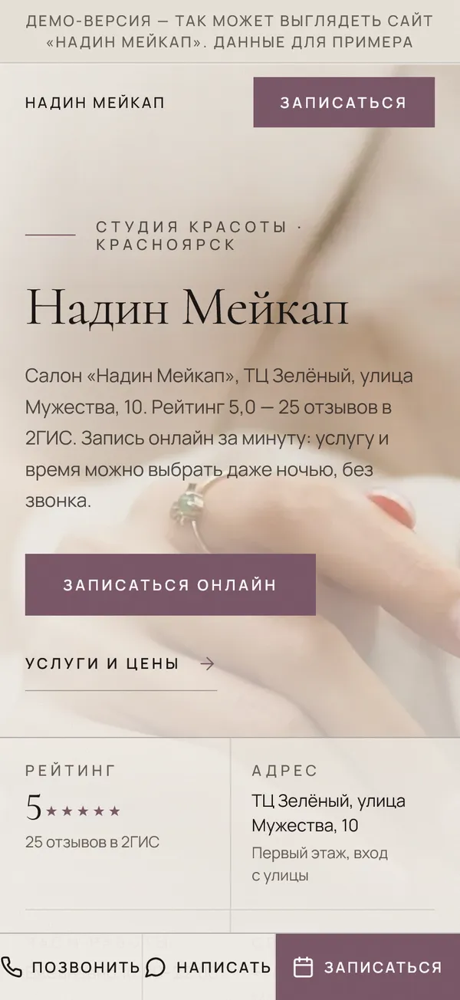
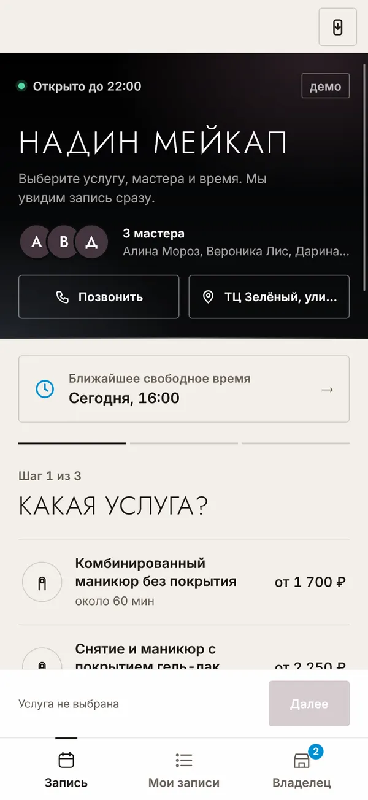
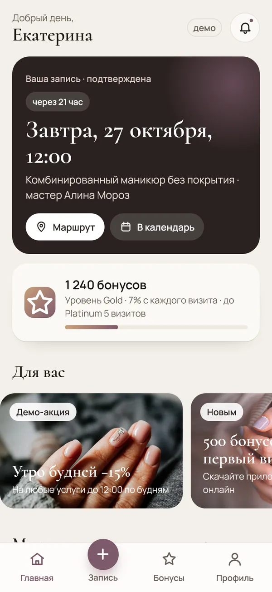
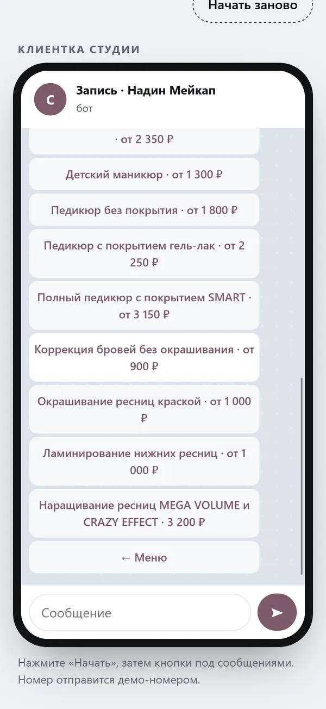

Для Надин Мейкап · ТЦ Зелёный, улица Мужества, 10
Мы студия «Точка записи» из Красноярска. Собрали для вас набросок: как салон «Надин Мейкап» может выглядеть в интернете. Это займёт пару минут, ничего не нужно устанавливать.
01 · Ваш сайт


Набросок на основе нашей работы: тексты, фото и цены будут ваши. Стиль подбираем под интерьер и характер места.
02 · Что можно добавить

Услуга, мастер, время за минуту. Вам приходит уведомление в MAX или Telegram.

Иконка на экране: запись, бонусная карта с QR, подарочные сертификаты.

Запись в переписке, напоминание накануне, после визита — просьба об отзыве в 2ГИС.
03 · Что мы заметили
04 · Сколько стоит
Сайт под ваш бренд, тексты, Яндекс, скорость. 5 дней.
Плюс онлайн-запись и уведомления. 3 месяца сопровождения в подарок.
Сайт, запись, приложение и бот. 3 месяца сопровождения в подарок.
Или сайт по подписке: 0 ₽ за разработку и 4 990 ₽ в месяц. Готовое демо с вашими фото и ценами покажем до оплаты.
05 · Как начнём